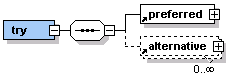

Because of uncertainties with network connections and performance issues in working with remote sites, it is good practice to provide for alternative content in case a service fails.
You can use the pipeline:try element to define preferred content and a series of alternatives. MCS attempts to serve the options you have specified in sequence.

The pipeline:preferred element is the first container processed. If it is not available, MCS moves on to any pipeline:alternative elements in the order you list them.
<html xmlns="http://www.w3.org/2002/06/xhtml2"
xmlns:pipeline="http://www.volantis.com/xmlns/marlin-pipeline"
xmlns:webd="http://www.volantis.com/xmlns/marlin-web-driver">
<head>
<title>DCI elements</title>
</head>
<body>
<div>
<pipeline:try>
<pipeline:preferred>
<pipeline:transform href="test.xsl">
<webd:get url="http://weather.yahooapis.com/forecastrss">
<webd:parameters>
<webd:parameter name="p" value="USWA0395"/>
<webd:parameter name="u" value="c"/>
</webd:parameters>
</webd:get>
</pipeline:transform>
</pipeline:preferred>
<pipeline:alternative>
<pipeline:content>
<p>There was a problem retrieving the information requested.</p>
</pipeline:content>
</pipeline:alternative>
</pipeline:try>
</div>
</body>
</html>
Please note, that if the web driver makes an HTTP request and receives the response, not necessarily with the status code 200, the operation is considered successful. This, for example, means that when webd:get is used and its url attribute points to a non-existing resource, a valid response '404 Not Found' is returned. The content of the pipeline:alternative element will not be rendered in such situation.
The pipeline error functions enable trapping and handling errors that occur during pipeline processing. These functions provide information about the specific error that occurred, and allow the page author to prepare an appropriate response. For instance, if an operation failed with an authentication error, then the author could provide a login page allowing the user to update the password.
The pipeline error functions are only allowed within the body of the preferred or alternative elements. An empty string will be returned, if the information required by these functions is not available.
The table below lists the pipeline error functions.
| Name | Purpose |
|---|---|
| pipeline:errorMessage | Returns the human readable message provided by the operation that caused an error. |
| pipeline:errorSourceID | Returns the value of the xml:id attribute of the operation that caused an error. |
| pipeline:errorCodeURI | Returns the URI of an error code. |
| pipeline:errorCodeName | Returns the name of an error code. |
| pipeline:errorInfo | Returns the value of an error property. |
<?xml version="1.0" encoding="utf-8"?>
<html xmlns="http://www.w3.org/2002/06/xhtml2"
xmlns:pipeline="http://www.volantis.com/xmlns/marlin-pipeline"
xmlns:gdocs="http://www.volantis.com/xmlns/2008/08/gdocs">
<head>
<title>Pipeline error functions</title>
</head>
<body>
<div>
<pipeline:try>
<pipeline:preferred>
<pipeline:transform href="fetch2xdime.xsl">
<gdocs:fetch xml:id="first fetch" category="document"
href="http://docs.google.com/feeds/download/documents/RawDocContents?action=fetch&
justBody=false&revision=_latest&editMode=false&docID=dcg224t7_2d92rmb64">
<gdocs:authenticate user-id="1testvolantis@gmail.com" password="1volantis1"/>
</gdocs:fetch>
</pipeline:transform>
</pipeline:preferred>
<pipeline:alternative>
<pipeline:content>
<p>There was a problem retrieving the information requested.</p>
<p>Message: <pipeline:value-of expr="pipeline:errorMessage()"/></p>
<p>Source Id: <pipeline:value-of expr="pipeline:errorSourceID()"/></p>
<p>Code Name: <pipeline:value-of expr="pipeline:errorCodeName()"/></p>
<p>Code URI: <pipeline:value-of expr="pipeline:errorCodeURI()"/></p>
<p>Code info (Captcha Token): <pipeline:value-of
expr="pipeline:errorInfo('captcha-key')"/></p>
<p>Code info (Captcha URL): <pipeline:value-of expr="pipeline:errorInfo('captcha-url')"/></p>
<p>Code info (Login): <pipeline:value-of expr="pipeline:errorInfo('login')"/></p>
</pipeline:content>
</pipeline:alternative>
</pipeline:try>
</div>
</body>
</html>
Related topics
About DCI
Pipeline error functions
Accessing Google Docs documents